A IMAGEM DO FUTURO!
A Licenciatura em Comunicação Audiovisual e Multimédia tem dado provas de grande dinamismo, oferecendo um percurso académico que alia uma componente de aprendizagem teórico-prática estimulante assente no Cinema e no Vídeo, com uma formação interdisciplinar na área da criação audiovisual e multimédia e das tecnologias associadas aos novos media. Em constante atualização, tal como a área o exige, explora-se o trabalho individual e em equipa em projetos práticos nas áreas da fotografia, do vídeo e da curta metragem, da criação web, sonoplastia, guionismo e direção de atores, das instalações multimédia e vídeo mapping. O curso é responsável pelo evento MULTIPLEX, Ciclo Anual de Imagens em Movimento, realizado em parceria com o BATALHA Centro de Cinema.[cite: 1]
Candidata-te!